Exploration Toolkit
Welcome to the Exploration Toolkit
Exploration Toolkit is a Unity asset which provides many exploration-related systems to add to your games.
There's a lot this toolkit has to offer, so it may be overwhelming to know where to start. Here's a list of learning resources, to help get you started:
-
Check out the multi-part tutorial series on YouTube, where I walk through each system, how to implement them, and how they work.
-
There are demo scenes for each of the toolkit's systems. Find these in the
Exploration Toolkit > Implementation > Demos > Showroom > Scenesfolder. -
This documentation!
New Update - v1.2
Version 1.2 of the toolkit has recently been released. With it, comes some exciting new features:
-
An upgrade to the Player Controller. It's not a custom kinematic controller with run, jump, crouch, sliding, etc.
-
Computers have been added, allowing the player to view messages, login, remotely interact with objects, and view...
-
Security Cameras, which pan back and forth, can track targets, and be viewed on a computer.
Setup
Setup
If you've finished installing Exploration Toolkit and are ready to jump in, you've come to the right spot!
Importing
When importing the asset, there are 3 main folders.
| Folder | What's in it? | Required |
|---|---|---|
| Core | The core scripts and assets needed for the toolkit to function. | Yes |
| Implementation | Models, textures, audio, and demo scenes. Good for learning the toolkit and implementing already built systems. | No |
| Documentation | PDF version of the documentation website. | No |
Layer Setup (Required)
This toolkit requires an Inspect layer to be setup and assigned in order to use the inspect system. Follow the steps below, if you are importing the toolkit into a new Unity project, or an existing one.
For a new Unity project
If you are importing the toolkit into a new Unity project, setting up the required Inspect layer is easy.
-
Go to the Tags & Layers window (select a GameObject, click on the Layers drop down, select Add Layer).
-
Click on the preset button.

- In the Select Preset window, click on the ExplorationToolkit_LayersPreset.preset asset. This is located in the
Core > Presetsfolder.

- This will create the Inspect layer and you should be good to go.
For an existing Unity project
If you are importing the toolkit into an existing Unity project with tags and layers already assigned, setting up the required Inspect layer is done like this.
- Go to the Tags & Layers window and add a new layer called Inspect.

-
Open the InspectController prefab
Core > Prefabs > Controllers. This manages the inspect system. -
Go to the Inspect Layer property and change that to the Inspect layer. This is what inspected objects will set their layer to when inspecting.

- Then select the InspectOverlayCamera child object and change its layer to
Inspect. When prompted, also apply the layer to all children object.

- Down in the Camera component, make sure that the Culling Mask is set to only the Inspect layer. This will make it so the inspect camera only renders GameObjects with that layer.

- Now for your player camera. Go to its culling mask and disable the Inspect layer. We don't want the inspect layers to be rendered twice.

Scene Setup
In each scene, you must add the ExplorationToolkitManager. This is the brain of the toolkit.
Exploration Toolkit Manager
The toolkit is built upon the idea of systems. There are many systems, such as: inspecting objects, crosshairs, compass bars, lockpicking, etc. These systems are all managed by the ETSystemRegistry, which allows objects in the scene to easily access whatever system they desire.
- Add the ExplorationToolkitManager to your scene, located in the
Core > Prefabsfolder.
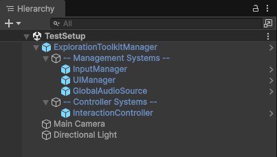
If you look inside the GameObject, you'll see 2 sections:
- Management Systems - These are components which manage/connect other systems. Things like detecting inputs, or managing audio.
- Controller Systems - These are the actual gameplay systems. Things like interaction, crosshairs, lockpicking, etc.
You'll notice that the prefab comes with some system already added. They're not required (you can always delete them), but these are systems you'll likey have in every gameplay scene.
All the different systems you can add to your scene can be found in the Core > Prefabs > Systems folder.
Learning the toolkit
In learning the toolkit's systems, I recommend starting with the Interaction System.
Optional Things
If you are implementing a menu with settings, add the ExplorationToolkitGameSettings prefab to your initial scene, located in the Core > Prefabs folder. This loads settings from the PlayerPrefs for other components to read, and for the settings screen to modify.
Demos
The best way to learn the toolkit is to see it in action. The asset contains a number of demo scenes, each covering a specific system. You can see how the scene it setup, how the systems work with each other, and how the components and GameObjects are constructed.
The demo scenes are located in the Implementation > Demos > Showroom > Scenes folder.
Tip
For an easy way to navigate around the demo scenes, open and play the Showroom_Menu scene.
Systems
Player
Player
These are a collection of systems that relate to the player, and your input into the game.
Player Controller
The toolkit comes with a kinematic player controller. You can find the prefab in the Core > Prefabs > Player Controllers folder.
Controls:
- Move
WASD - Run
Left Shift - Camera look
Mouse - Crouching
Left Ctrl - Zoom the camera
Middle Mouse
How it Works
At it's core, the controller uses Unity's built in CharacterController component, with heavy modifications to improve upon it.
This is all controlled via one component: ETPlayerController.
States
There are 3 states the controller can be in.
| State | About |
|---|---|
| Grounded | When on solid, stable ground. |
| Falling | When in the air, both falling down and jumping. |
| Sliding | When grounded, but on a surface too steep to walk on. The player will slide down the slope. |
Tip
For medium to large scale games you may find it limiting and wish to implement your own solution.
Input Manager
The toolkit uses a custom input manager. It registers inputs via whatever system you wish, then outputs events that the toolkit's components can listen to.
This is required. By default, there's support for Unity's new and old input systems. If you are using a 3rd party solution such as Rewired, you can still create a custom module script which interfaces with the input manager.
The overall purpose
The input manager acts as a wrapper for any input system. This means you don't need to know how to send inputs to the player, or the interaction system. That's all done for you.
Implementing
Every scene with player inputs requires the input manager.
Go to the Core > Prefabs > Managers folder and you will find 2 prefabs.
-
InputManager - Detect inputs from Unity's new input system (default as of Unity 6).
-
InputManager_OldInputSystem - Detect inputs from the legacy input manager.
Whichever one you're using, drag it into the scene.
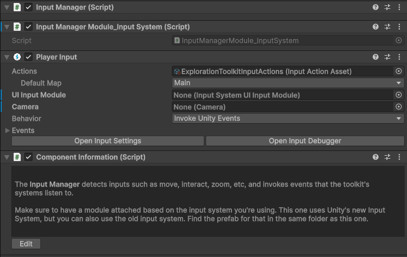
If you're using the new input system, you can view/modify the Input Action Asset, located in the Core > Input Actions folder.
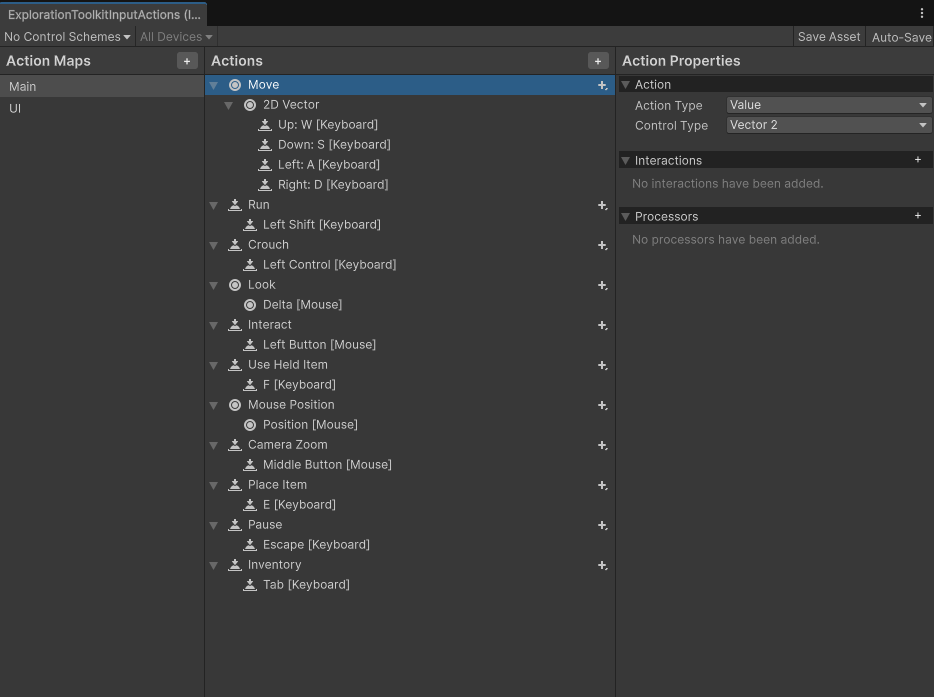
Properties, Events & Methods
The InputManager singleton (InputManager.Instance) has properties you can access, events you can listen to, and methods you can call.
Properties
bool PlayerInputDisabledVector2 MousePositionfloat MouseScrollWheelfloat SmoothMouseScrollWheelVector2 MouseDeltabool CursorVisiblebool CursorLocked
Events
OnMove (Vector2)*OnMovePersistent (Vector2)OnRun (InputPhase)*OnCrouch (InputPhase)*OnInteract (InputPhase)*OnUseHeldItem (InputPhase)*OnPlaceItem (InputPhase)*OnCameraZoom (InputPhase)*OnLeftMouseButton (InputPhase)OnRightMouseButton (InputPhase)OnPause (InputPhase)OnInventory (InputPhase)
The InputPhase enum has 4 possible values:
Pressed- The input was triggered this frame.Released- The input was cancelled this frame.None- No change in the input.Disabled- The input has been blocked from invoking its state.
*
The events above with an asterisk will only invoke InputPhase.Disabled when PlayerInputDisabled is true. The OnMove event will invoke Vector2.Zero, so if you wish to still capture the movement input (WASD) when player input is disabled, listen to the OnMovePersistent event instead.
Methods
EnableCursor (bool cursorVisibility)DisableCursor ()ResetCursorState ()EnablePlayerInput ()DisablePlayerInput ()ResetPlayerInput ()
Modules
The input manager works on a modular system, meaning, the base InputManager script doesn't know what input system you're using (new, old, Rewired, etc). All it does is emit events once corresponding functions are called.
The module scripts are what detect the inputs from your respective input system. You'll see that the toolkit has two, one for the new input system, and one for the old.
Creating a module
If you're using a 3rd part or custom input system such as Rewired, you can easily connect that to the toolkit's InputManager.
-
Create a module script, inheriting from
InputManagerModuleBase.namespace ExplorationToolkit { public class InputManagerModule_CustomInputSystem : InputManagerModuleBase { } } -
Detect your inputs however you like. You can connect them to the InputManager by accessing the protected
inputManagervariable. For example, here's how to update the mouse position with the new input system.inputManager.SetMousePosition(Mouse.current.position.value); -
For a complete input module, I recommend calling these functions on the InputManager.
MoveInput (Vector2 input)RunInput (InputPhase inputPhase)CrouchInput (InputPhase inputPhase)InteractInput (InputPhase inputPhase)UseHeldItemInput (InputPhase inputPhase)PlaceItemInput (InputPhase inputPhase)CameraZoomInput (InputPhase inputPhase)LeftMouseButtonInput (InputPhase inputPhase)RightMouseButtonInput (InputPhase inputPhase)PauseInput (InputPhase inputPhase)InventoryInput (InputPhase inputPhase)SetMousePosition (Vector2 pos)SetMouseScrollWheel (float value)SetMouseDelta (Vector2 delta)
If you're having any issure with setting up an input module, simply have a look a the two existing ones.
Crosshairs
You can create a dynamic crosshair that changes depending on what you're looking at, and the different types of interactions you may invoke.
Setup
Crosshairs are controlled via the CrosshairController component and a canvas for rendering.
You can find the prefab in the Core > Prefabs > Player Systems folder. Drag that into your scene as a child of the ExplorationToolkitManager.
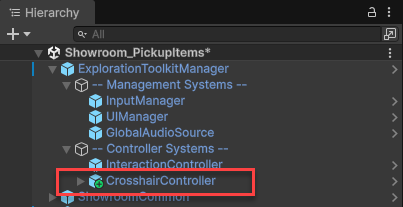
Selecting the CrosshairController, you can define some settings.
- Use as Mouse Cursor - When the mouse is enabled (e.g. when inspecting, in menus), the crosshair will act as the mouse cursor.
- Image - The UI image component where the crosshair will be rendered.
- Default Crosshair - The crosshair that will be visible by default. If you want no crosshair by default, set this to nothing.
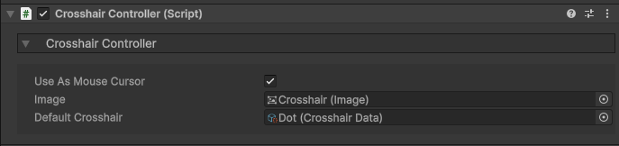
Creating a Crosshair
Each crosshair type is stored in a CrosshairData ScriptableObject.
- In the Project window, right click and select:
Create > Exploration Toolkit > Crosshair Data. - In the Inspector, assign a sprite and modify the properties as you see fit.
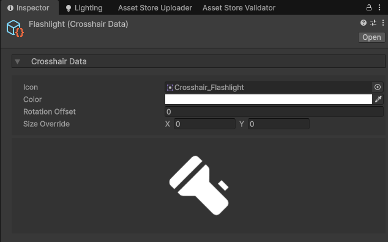
If you wish for this to be the default crosshair:
- Select the CrosshairController object, and assign it to the Default Crosshair property.
Dynamic Crosshair
The crosshair system is dynamic, meaning it will change depending on what you're looking at. This happens according to the interaction system. When you look at an Interactable, your crosshair can/will change.
Custom Player Controller
You may not want to use the provided player controller, opting instead for your own solution, or a 3rd party one. Since the toolkit uses a custom input system, you'll need to connect your player controller to it.
Note
Exploration Toolkit uses a custom input manager. This doesn't mean you can't use 3rd party input systems such as Rewired — you can! Click here if you're not using Unity's built-in input system.
In the player script, we first need to create a read-only property which will fetch the InputManager from the ETSystemRegistry.
private InputManager inputManager => ETSystemRegistry.Instance.Get<InputManager>();
Then we can connect to the input events we require.
void OnEnable ()
{
inputManager.OnMove += OnMoveInput;
inputManager.OnRun += OnRunInput;
inputManager.OnCrouch += OnCrouchInput;
}
void OnDisable ()
{
inputManager.OnMove -= OnMoveInput;
inputManager.OnRun -= OnRunInput;
inputManager.OnCrouch -= OnCrouchInput;
}
In their respective methods, do what you will with those inputs.
void OnMoveInput (Vector2 input)
{
moveInput = input;
}
void OnRunInput (InputManager.InputPhase inputPhase)
{
if(inputPhase == InputManager.InputPhase.Pressed)
runInput = true;
else
runInput = false;
}
void OnCrouchInput (InputManager.InputPhase inputPhase)
{
if(inputPhase == InputManager.InputPhase.Pressed)
crouchInput = true;
else
crouchInput = false;
}
Player Stats
Player stats can be used to keep track of coins, keys, items, and other collectables. A stat can also act as a key in unlocking Doors, or as the means in allowing the player to attempt Lockpicking.
Creating a Stat
A stat is represented via a ScriptableObject. To create one, right click in the Project window and go Create > Exploration Toolkit > Player Stat. Give the file a name, then you can fill in the properties.
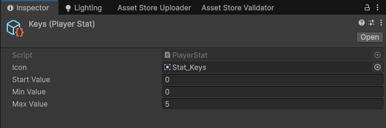
This is merely an object that represents the rules and icon of the stat. It doesn't hold the stat value. That's controlled by the PlayerStatManager.
Player Stat Manager
If you wish to use player stats in your scene, drag in the PlayerStatManager prefab, located in the Core > Prefabs > Systems > Management folder into your scene as a child of the ExplorationToolkitManager.
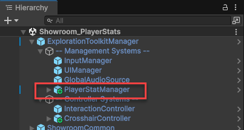
In the Inspector, add to the list all the stats you wish to use in the scene.
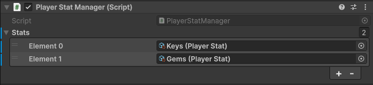
There is a canvas as a child of the manager. This is where the stats are rendered on-screen for the player to keep track of. You don't have to store them here, it's just a convenient place.
Use and duplicate the template GameObject - however many stats you wish to display on-screen.
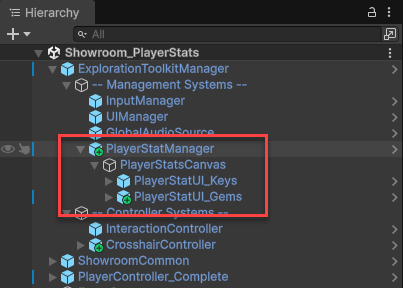
For each PlayerStatUI, position it in the canvas, and assign a stat to the Stat property. At the start of the game, this component will automatically connect to the PlayerStatManager and display the current value of the stat. Whenever the value changes, so too will the text.
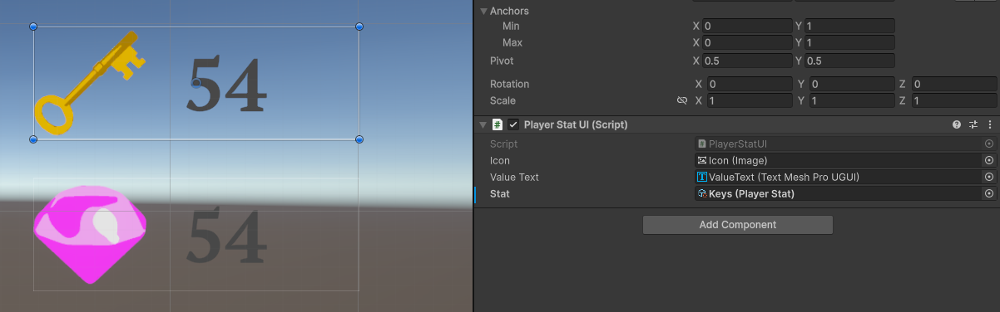
Player Stat Trigger
If you want a way of increasing or decreasing a stat, and don't wish to write a custom script, you can use the PlayerStatTrigger component.
- Assign a stat to the
Statproperty. - Then via a button, interaction, whatever, call either the
IncreaseValue()orDecreaseValue()function, sending over an amount.
In the example below, I have a PressableButton which increases the Gem stat by 1 each time it's pressed.
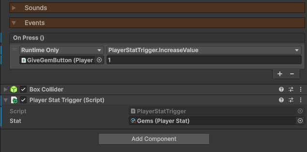
Scripting
You can also interact with the stats via scripting. Do note, that you won't be interacting with the Stat ScriptableObject files directly. Only the PlayerStatManager.
Here are some handy functions you can call on the PlayerStatManager:
IncreaseStatValue (PlayerStat stat, int amount)- Increases the given stat by an amount.DecreaseStatValue (PlayerStat stat, int amount)- Decreases the given stat by an amount.HasStat (PlayerStat stat)- Returns true if the given stat is in thestatslist.StatValue (PlayerStat stat)- Returns the current value of the given stat.
Interaction
Interaction
Interactions are at the core of each system in the toolkit. This is the first aspect you'll need to understand in order to work with the other systems.
Basic Setup
What is an Interaction?
When you look at an object or hover your mouse over an object, certain things can happen. You could interact with a door to open it, click on a keypad button to enter the number, or interact with a lever to pull it.
With the default controls, an interaction occurs when you're looking at an Interactable and click the left mouse button.
Setup
1. Interaction Controller
In order to interact with objects in the world, you need to have an InteractionController in the scene, as a child of the ExplorationToolkitManager object.
By default, the ExplorationToolkitManager prefab has this controller included, so there's no need to add it manually.
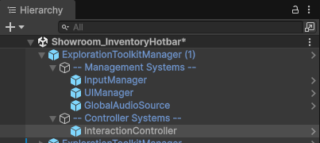
Looking in the Inspector, there are a few things we can go over to better understand this component.
- The
Interact Methoddefines what types of interactions are supported. Check out the section below for more info. World Rangeis the max distance from the camera a World interaction can occur.Cursor Rangeis the max distance from the cursor's world position a Cursor interaction can occur.Checks Per Seconddefines the rate at which raycasts will be emitted to detect interactables. You may want to limit this if you're experiencing performance issues, but overall the system is well optimized.- If you are implementing the Inspect system, assign your inspect camera here, or click Find in scene to automatically reference the inspect camera.
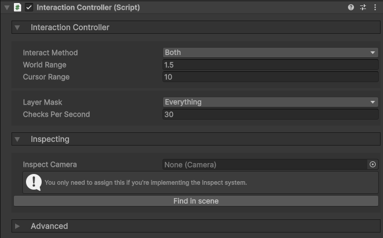
2. Interactables
Now that we have the interaction controller, we need actual objects to interact with. If you want the player to be able to interact with something, simply attach the Interactable component, and a collider to define the interaction bounds.
- If you are using the Crosshair system, you can set a
Crosshairto display when hovering over this Interactable. That could be a door icon when looking at a door, or an open hand when looking at an item to pickup. Has Cooldownallows you to limit the rate at which it can be interacted with.- As of now,
Prompt Textdoes nothing. This system will be implemented in the future.
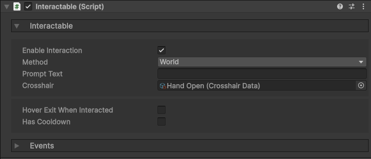
Interact Methods
On the Interactable component, you may notice there's an Interact Method property. There are 3 types of interactions that can occur and you can filter Interactable components to detect all or one of them.
| Method | How it Detects |
|---|---|
| World | When you aim the center of the camera at something. E.g. opening a door, picking up an item. |
| Cursor | When you hover the mouse cursor over something. E.g. clicking buttons in a keypad when the camera is zoomed into it. |
| Both | Checks for both World and Cursor interactions |
For example, let's say you have a puzzle box. You might have an Interactable (with the World method) on the box for the player to look at and interact to open the inspect screen. With the mouse now enabled, you might have smaller interactables (with the Cursor method) for the player to click on.
Pickup Objects
You can interact with an object to pick it up and hold it in your hands. These objects can be used as keys to open doors, weapons to shoot, puzzle pieces to place in the right position, etc.
Setup
1. Pickup Controller
The Pickup Controller works in tandem with the Interaction Controller, checking to see what the player is looking at. If it's a Pickupable, then upon interaction, the object will be placed in the player's hand.
Add the PickupController prefab to your scene, located in the Core > Prefabs > Systems > Controllers folder, and make it a child of the ExplorationToolkitManager.
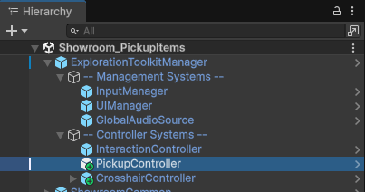
Why make it a child of the ExplorationToolkitManager?
The ExplorationToolkitManager is what registers all the systems we wish to use in the scene. Learn more about it here.
In the Inspector, we can configure our pickup system.
Hold Originis the empty GameObject which held items will be parented to. This should be a child of your camera. The included player controller prefab has this GameObject already created.- The other settings are for placing down the currently held pickupable. We'll be going over that part of the system later.
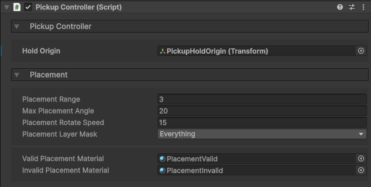
2. Pickupable
The Pickupable component marks a GameObject as available to be picked up by the player. For an object to be picked up, it requires 3 components:
- Interactable - Used to detect when the player is looking at the object.
- Pickupable - The component we're learning about now.
- Collider - Any collider which is used to define the interaction bounds.
The component itself has a number of different sections which we'll be going over. The first, has a couple of properties.
- Enable
Can Pickup in Worldif you want to be able to interact with this object to pick it up. Most of the time, you'll want this, unless it's an item you want to only equip from the inventory. - Enable
Can Equip From Inventoryif you're planning to have this object be added to the player's inventory and want them to be able to equip it. Learn more about how to set that up here.
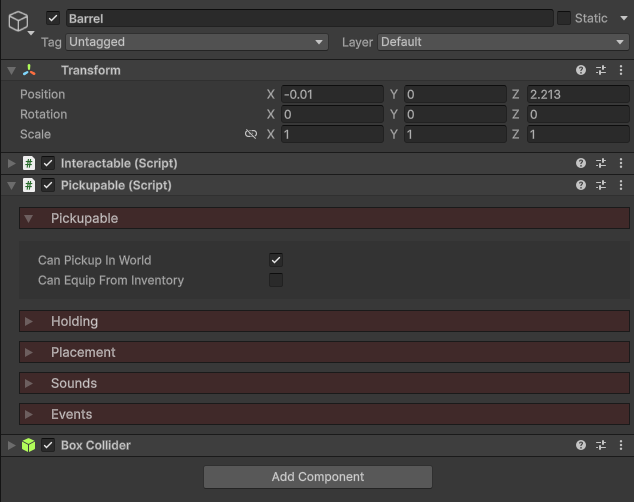
Holding
If your hand is empty and you interact with a Pickupable, it will be placed in your hand (moving, rotating and parenting it to the Hold Origin).
In the Inspector, you can adjust the holding properties.
- If you want the object to be of a different scale once held (you might want to shrink large objects or size up smaller ones), adjust the
Hold Scalevector. - By default, the object will be held from the Pickupable's Transform origin. If you want to adjust where the object is held from, create an empty GameObject child and assign that to the
Hold Pivot. - To mitigate any un-wanted collision when holding, you can drag the object's colliders into the
Colliders to Disablelist.
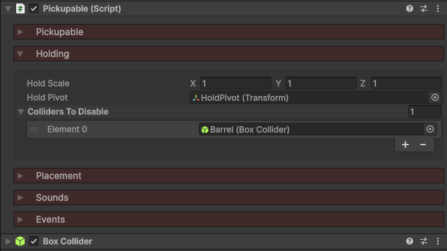
Here's what it looks like when the player is holding a barrel (from the Showroom_PickupItems demo scene). I've added a Hold Pivot so the barrel is not being held from the base, but from the center.
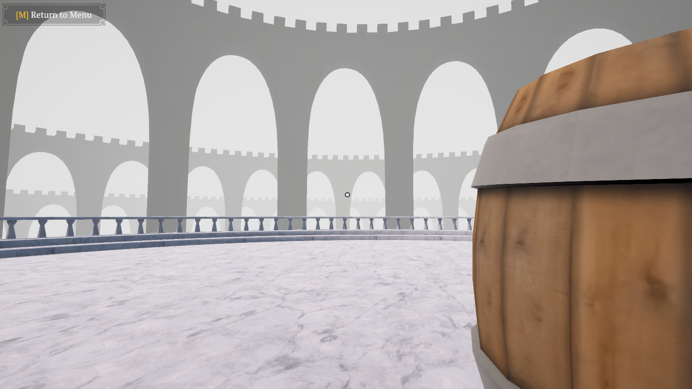
Placement
When an object is in your hand, you may be able to place it back down in the world.
There are two placement types you can choose from.
| Type | How it Works |
|---|---|
| World | Freely place the object on any surface as long as there are no obstructions. |
| Place Point | Snap the object to a pre-defined Place Point |
World Placement
Under the Placement section, enable Can Place Down, and set Placement Type to World.
Now with the object in your hand, you can hold down E to preview where it will go. If the placement is valid and you release E, the object will be removed from your hand and return to the world.
- By default, the object will be placed at its Transform origin. If you wish to change this, create an empty GameObject and drag that into the
Placement Pivotproperty.
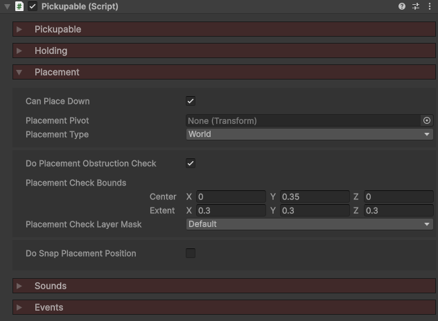
You can make the object only placeable if there are no obstructions in the way, by enabling Do Placement Obstruction Check.
In the scene view, you will now see an orange rect which defines the check bounds. When placing the object, if any colliders (filtered by the Placement Check Layer Mask) are inside, the placement will be invalid.
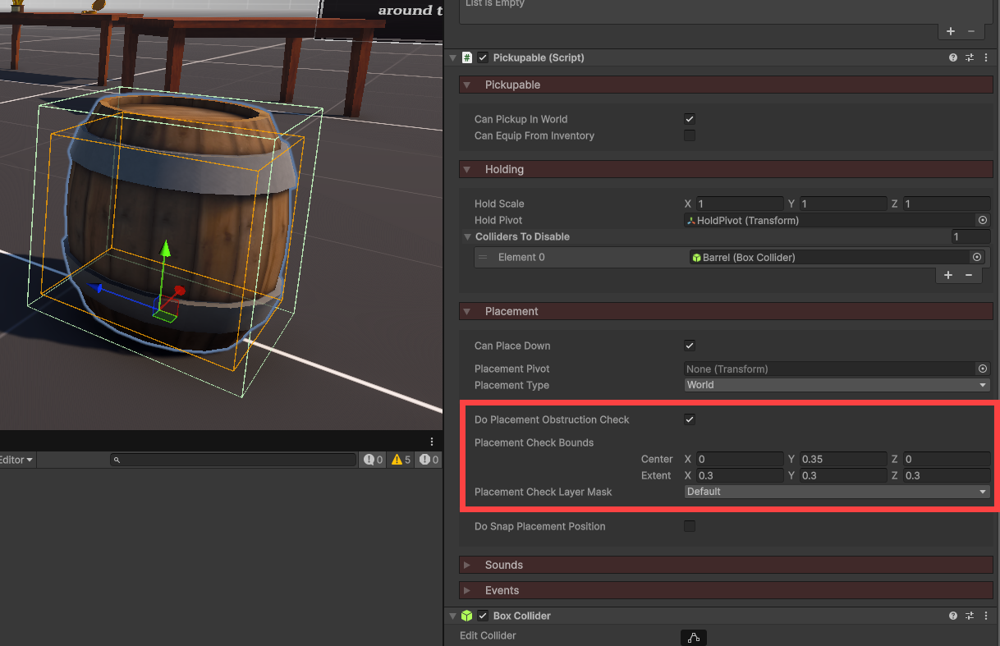
To know if a placement is valid or invalid, while holding down E to place, the object's materials will change to one of two as seen below. These materials can be changed in the PickupController component.
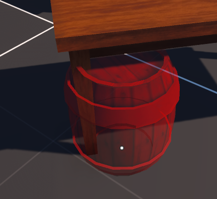
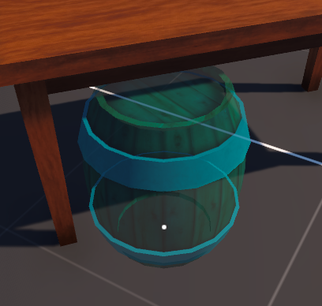
By default, wherever you are looking will be the point at which the object will be placed. Enabling Do Snap Placement Position will round that position to the nearest Placement Snap. This is good for placing on a grid.
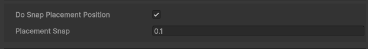
Place Point
With the object in your hand, you can now specific points at which it can be placed down. This in turn, could trigger events, such as placing a statue on a pressure pad, or construcing a puzzle.
This is done by defining Place Points.
- Create an empty GameObject.
- Attach the PlacePoint component.
- Attach a collider.
Let's explore some of the componen's properties.
Placement Querydefines what can be placed here.
| Query | About |
|---|---|
| Desired Pickupable | Only the Desired Pickupable can be placed on this point. Good for a puzzle game where a place might need to find a certain object and place it down on the correct slot. |
| Tag | Only pickupables with the matching Tag can be placed on this point. Good for something like a chess board, or pedestals which can hold a variety of things. |
- By default the pickupable will be placed on the point's Transform origin. You can create an empty GameObject and set that as the
Place Pivotto adjust that. - If you want the places object to have a different scale, adjust the
Place Scale. - If
Start Placedis true, theDesired Pickupablewill be in a placed state upon initialization (doesn't work for tag placement). - If you want the pickupable to be parented to the place point when placed, enable
Set as Child. Disable Interactivitywill disable the pickupable's colliders and pyhsics when placed down.
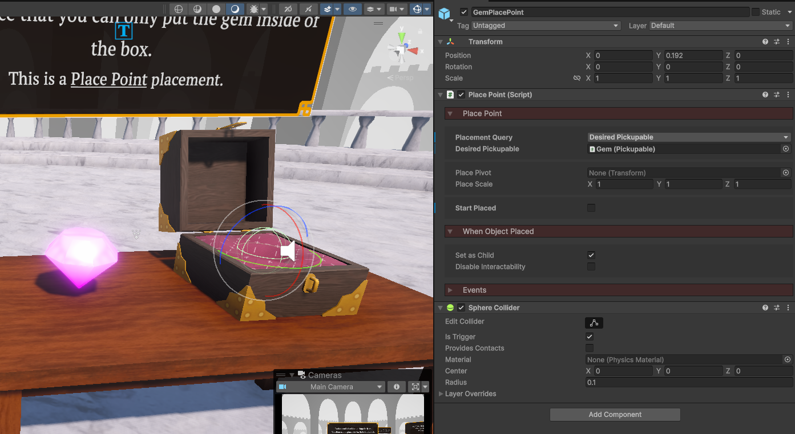
Under the Placement section of the Pickupable, enable Can Place Down and set the Placement Type to Place Point.
With the object in your hand, you can now define specific points at which it can be placed down. This in turn, could trigger events, such as placing a statue on a pressure pad, or construcing a puzzle.
- By default the object will be placed based on its Transform origin. You can create an empty GameObject and set that as the
Placement Pivotto adjust that. - The
Place Point Tagis what's used to check if a place point can hold this object, if that point's query is set to Tag.
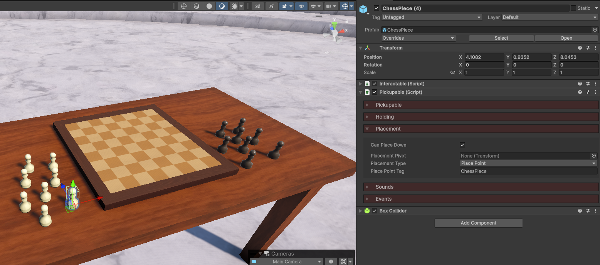
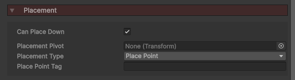
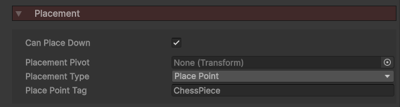
Throwing
When an object is in your hand, you can choose to throw it instead of placing it down.
- Attach a Rigidbody component to the object (it will not work without one).
- Disable
Can Place Down - Enable
Can Throw
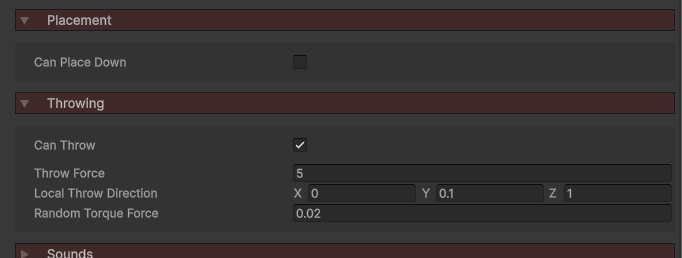
There are a couple of settings you can adjust.
Throw Forceis the impulse force applied when thrown.Local Throw Directionis the direction relative to the camera's rotation that the force will be applied along.Random Torque Forcewill add random angular force when thrown, spinning the object in the air.
Inspect Objects
You can interact with objects to inspect them. This will open the inspect screen, where you can rotate, zoom, and further interact with the object. This is good for puzzle games where you may want to read notes, or for implementing puzzle boxes.
Setup
1. Inspect Controller
The Inspect Controller works in tandem with the Interaction Controller, checking to see what the player is looking at. If it's an Inspectable, then upon interaction, the inspect screen will open, and the object will be setup for inspection.
Add the InspectController prefab to your scene, located in the Core > Prefabs > Systems > Controllers folder, and make it a child of the ExplorationToolkitManager.
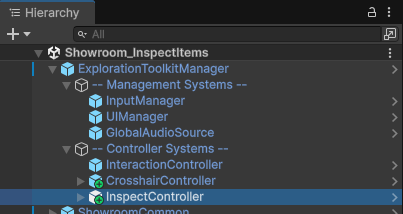
Why make it a child of the ExplorationToolkitManager?
The ExplorationToolkitManager is what registers all the systems we wish to use in the scene. Learn more about it here.
In the Inspector, we can configure our inspect system.
- The
Inspect Camerais what gets enabled when we enter the inspect screen. We'll go over how that works next. - The
Inspect Parentis an empty GameObject which the Inspectable object will be made a child of. - You can also define the layer and rendering layer mask which will be applied to the Inspectable object. This is what the
Inspect Camerarenders. - You can adjust the camera controls for the inspect screen, field of views and rotate speeds.
- The GameWindow component is used to define properties related to being in the inspect screen. Learn more here.
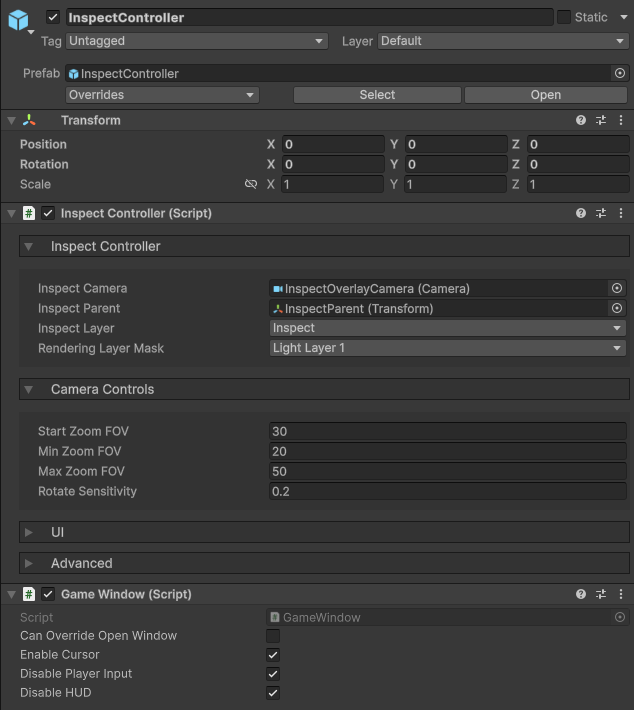
Now let's explore the children objects of the InspectController prefab.
- InspectOverlayCamera - The camera which toggles when entering/exiting the inspect screen. This is an Overlay camera (so make sure to add it to your main camera's stack), which only renders the Inspect layer.
- InspectCanvas - UI canvas with the background, text elements and buttons.
- InspectLight - Directional light which illuminates only the inspected object. You can adjust the brightness, color, etc here.
- InspectParent - The empty GameObject which the Inspectable object will become a child of. This is what we rotate when moving our mouse in the screen.
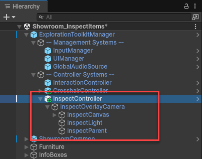
Note
If you have not already setup the Inspect layer, you must do so in order to use this system. The inspected object is rendered on a separate layer so it overlays everything else in the scene. Learn how to set that up here.
2. Inspectable
The Inspectable component marks a GameObject as available to be inspected by the player. For an object to be inspected, it requires 3 components:
- Interactable - Used to detect when the player is looking at the object.
- Inspectable - The component we're learning about now.
- Collider - Any sort of collider to define the interaction bounds.
The component has a number of properties we can explore.
- The
Inspect Descriptionis the text displayed at the bottom of the screen when inspecting. - By default, the object will rotate around its Transform's origin. You can create an empty GameObject child and assign that to
Inspect Pivotto adjust it. Inspect Rotationis the starting local rotation.- Some objects will appear to small or too big when inspecting, so you can adjust their
Inspect Scale. - If you want the player to be able to inspect an object by interacting with it in the world, enable
Can Inspect in World. - To mitigate any issues with collision, drag all the object's colliders into the
Colliders to Disablelist.
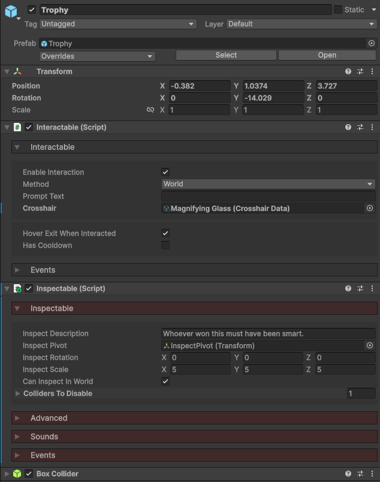
Technical Overview
There are a few steps in the process of inspection.
- The player interacts with an Inspectable, triggering an inspection.
- The inspect camera is enabled, displaying the canvas and other children objects.
- The Inspectable is made a child of the
Inspect Parent. - The Inspectable has its and all its childrens' layers changed to Inspect, so it will be renered by the inspect camera.
- The original layers are cached and will be reset upon exiting the inspection.
- The Inspectable has its and all its childrens' MeshRenderers rendering layers changed to
Rendering Layer Mask. This makes it so the inspect light only illuminates the inspected object. - Player input is disabled via the UI Manager, and the mouse is enabled.
- Upon exiting, the reverse of these steps happen.
Mechanisms
Mechanisms
A mechanism is the general term given to a component that does something upon interaction by the player.
This could be opening/closing a door, pressing a button, pulling a lever, etc.
Doors
Doors are interactable objects which can open and close, be locked, unlocked with a key, or lockpicked. There's quite a bit to them, so let's look at how to set one up.
Setup
To create a door, attach the Door component to your GameObject. Where you put this component doesn't matter. I'd recommend it being on the root object of your door, and not the actual Transform that will swing.
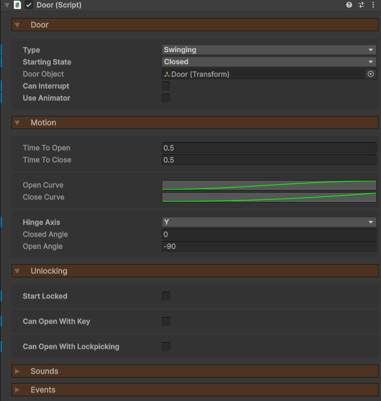
Now, on the actual GameObject which will be moving, or the means of the player interacting with the door to open it, attach 2 components:
- Interactable - Used to detect when the player is looking at the door.
- Collider - Any type of collider defining the interaction bounds.
Here, I've gone ahead and attached these components to the model of the door. We then want to connect the OnInteract event to the door component's corresponding OnInteract function. This will not just attempt to open/close the door, but check to see if the player can unlock it first if setup that way.
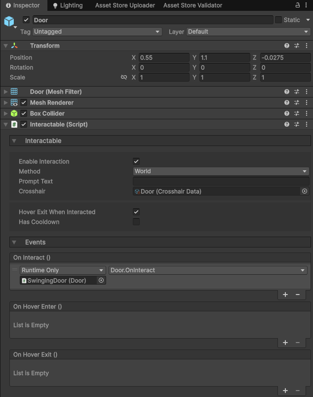
By default, the door will be animated via scripting.
- Define the
Typeof door. Swinging doors animate their rotation, Sliding doors animate their position. - The
Starting Statedetermines if the door starts open or closed. - Assign a
Door Object, which will be the object that's rotated/moved. - If
Can Interruptis true, the door can change state mid-swing. Time to OpenandTime to Closedetermine the animation duration.Open CurveandClose Curveallow you to smooth out the animation.Hinge Axisdetermines the local rotation axis the door will swing around.Closed AngleandOpen Angledetermine the local rotation for the closed and open state.
Instead of animating the door via script (which is the default setting), you can choose to connect it to an Animator component. To do this, simply enable Use Animator.
The Is Open Bool Parameter Name is the boolean parameter the component will toggle on the referenced Animator component. Hook this up however you like to your animation.
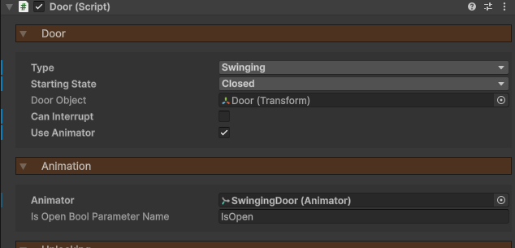
Unlocking
If you want the door to be locked, enable Start Locked. This will prevent the player from opening the door.
Keys
One way of opening the door could be with a key.
- Enable
Can Open With Key. - Click on the
Create Newbutton. This will create a new KeyUnlockable component, which is where we define the type of key (item, pickupable, stat), as well as if the key is destroyed upon unlocking.
Check out Unlockables if you want to learn more.
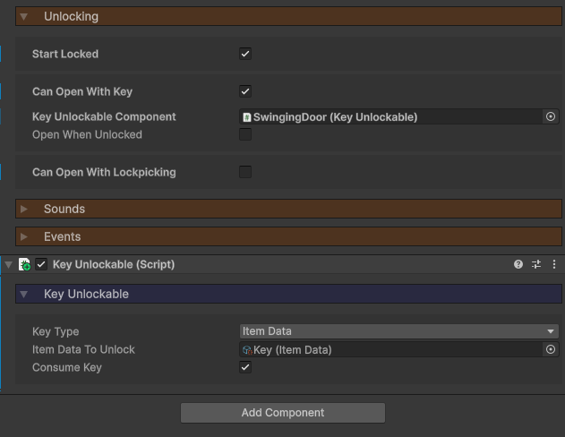
Lockpicking
Instead, or as well as a key, you can implement lockpicking to open the door.
- Make sure you have a LockpickingController added to your scene.
- Enable
Can Open With Lockpicking. - Click on the
Create Newbutton. This will create a new Lockpickable component, which is where we define the lockpicking settings (difficulty, item required, etc).
Check out Unlockables if you want to learn more.
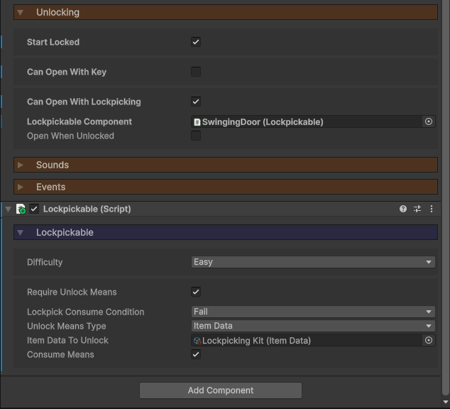
Events
Doors have 3 possible events that can be invoked.
OnOpenedwhen the door opens.OnClosedwhen the door closes.OnUnlockedwhen the door is unlocked, either via a key or lockpicking.
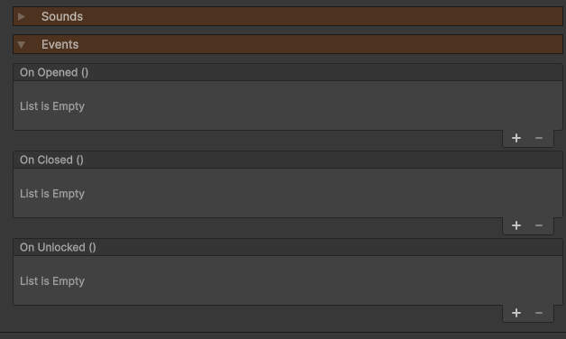
Computers
Computers are interactable objects which can provide the player information, and/or allow them to interface with the level around them. Computers are made up of screens - login, messages, security cameras, remote access - you can customize what screens the player has access to, and even create your own.
Setup
-
To begin, you will need to add the ComputerManager prefab to the scene, making it a child of the ExplorationToolkitManager. This can be found in the
Core > Prefabs > Systems > Managementfolder. This manages virtual mouse input. -
The computer prefab is located in the
Implementation > Prefabs > Computersfolder. Drag that into your scene and place it where you want. -
From here, you can modify the ComputerController component to your liking, and customize the screens that make it up.
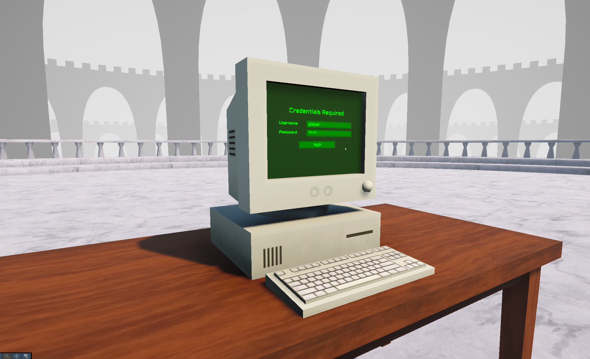
Prefab
Let's have a look at the computer prefab. It's got quite a few children, each serving a specific purpose.
CameraFocusPivot- The point at which the camera will move to when focusing on the computer.ScreenMesh- The quad which displays the screen's render texture.AmbientAudioSource- The computer plays a looping hum sound via this audio source.GeneralAudioSource- Sound effects are played through this audio source.ComputerScreenRenderer- Manages the rendering process (canvas -> render camera -> render texture -> material -> ScreenMesh).ComputerScreenCanvas- The world space canvas which represents the screens.
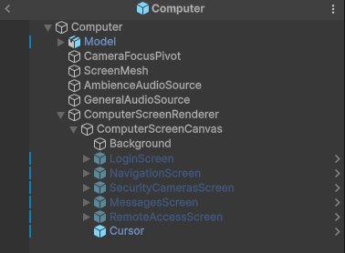
Users
A user is either the player who's interacting with the computer, or someone who sends the player messages. Each user has a username, password, display name, and email address. Not all of these properties are required, but if you want the player to login, they will need a username/password.
Users can be found in the Implementation > Data > Computer > Users folder. You can create a new user by right clicking in the Project window and going Create > Exploration Toolkit > Computer > User.
Info
You must have a user defined for the player, then on the ComputerController, assign it to the User property. There is already one by default, so you can just modify the existing Player user asset.
Messages
You can have the player receive messages/emails on the computer. These messages can feature text content, as well as image attachments.
There are a few messages already setup for the demo scenes, which you can find in the Implementation > Data > Computer > Messages folder. You can create a new message by right clicking in the Project window and going Create > Exploration Toolkit > Computer > Message.
A message requires both a Sender and Receiver user. The receiver will be the player, and the sender will be whichever character you wish to send the player a message. This could be their friend, their boss, an admin, or a mysterious person.
In the Computer Controller, you can define a list of Starting Messages, which will be sent to the computer at the start of the game.
Screens
Screens are the different windows/pages a computer has. There are many built-in screens such as login, navigation, messages/email, security cameras, etc. You can also create your own.
Login Screen
This screen has input fields for a username and password. In the ComputerController component, you can specify if the player needs to login, and if so, whether or not they require both a username and password, or just a password.
The credentials they login with, are specified via ComputerUser scriptable object, and assigned to the ComputerController's User property.
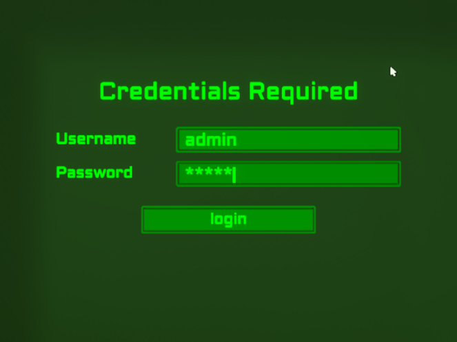
Navigation Screen
This is the root screen - the one all back buttons navigate to. Here, the player can choose which screen to view.
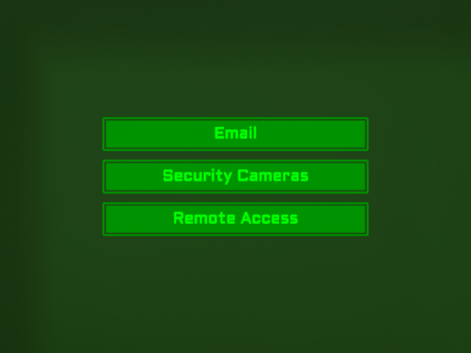
Messages Screen
This is where the messages the computer receieves will be found. They will appear as an inbox message, with both the sender (name or email address), and subject line. The icon to the left will also note if the message has been read by the player or not.
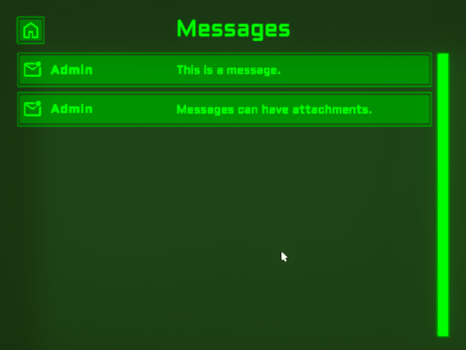
Clicking a message will open it up. At the top, you can see more details about the sender, and the body of the message will be displayed in the large area below. Images can also be sent over with a message.
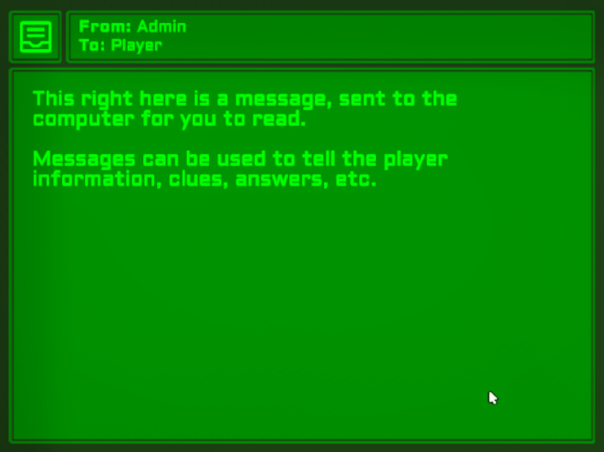
Security Cameras Screen
Security cameras can be assigned in the Inspector to appear in this window. When selected, it will activate the camera and preview it on the right hand side.
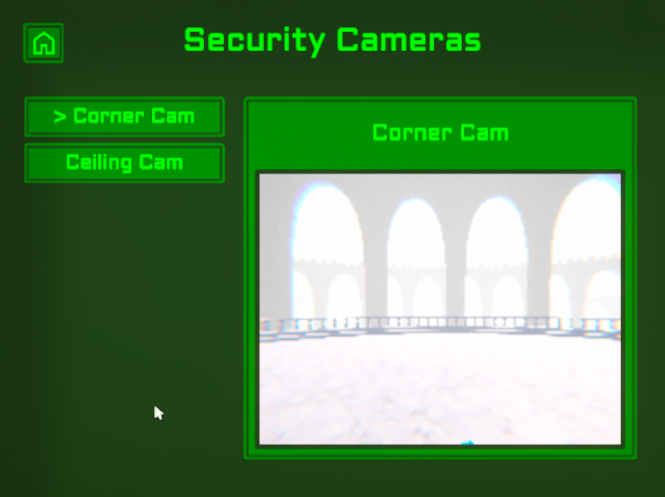
Remote Access Screen
Doors and other interactions can be triggered via this window.
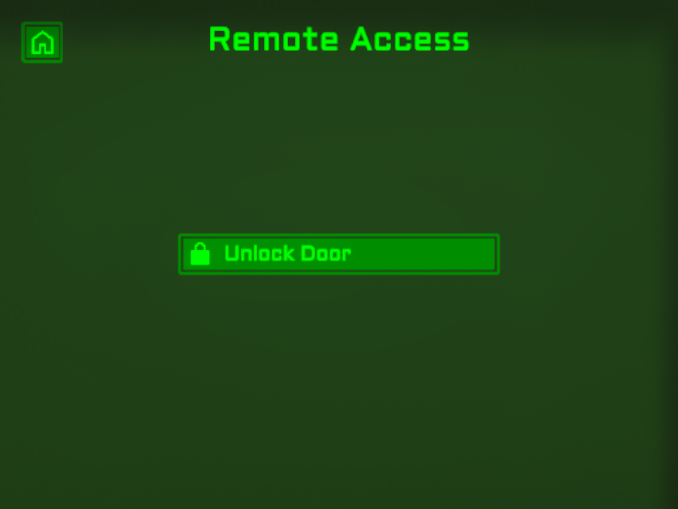
Creating a Screen
-
Open the computer prefab and find the ComputerScreenCanvas prefab.
-
Create a new empty GameObject and fill that with the contents of your screen.
-
If your screen has no unique functionality, attach the ComputerScreenBase component. Otherwise, you can create a new script, inheriting from ComputerScreenBase.
-
In the parent ComputerController, add your new screen to the
Screenslist.- Here, you can also remove any screens you don't want.
Rendering
The computer visuals are made with UI elements on a Canvas. They are rendered by a camera unique to each computer and outputted to a Render Texture. This texture is then displayed on a screen mesh.
This method is the best for a number of reasons:
- The UI elements are easier to modify/build upon as they're not scaled down and rotated.
- You can change the Render Texture's resolution and color format to simulate a computer screen.
Note
What this also means, is that the player cannot use their cursor to click on the UI elements, as what they see is merely a texture. Next up we'll go over how the cursor works.
The rendering is all controlled by the ComputerRenderScreen component. You'll notice there are properties such as Master Render Texture and Master Material. These are not the actual assets which are applied and used by the computer, merely templates. At the start of the game, instances of those 2 assets will be made. This allows for multiple computers to be rendering their own screens, without the need to manually create Render Textures and materials for each.
Cursor
The computers have a cursor which you can control with the mouse, but this is not the actual software cursor. It's a virtual one, made possible only with the Input System, so if you are using an alternative input method for Unity, this component might need to be modified.
Color Palettes
Different games will require different colors for the computer elements (retro green, black and white, modern blues, etc). You can go ahead and manually change the colors of the default layout, but there's an easier option if you wish to still implement the look of the default layout.
A ComputerColorPalette defines what colors are used for the different swatches in the UI (background, primary, text, etc). These can be found in the Implementation > Data > Computer > Color Palettes folder. You can also create your own by right clicking in the Project window and going Create > Exploration Toolkit > Computer > Color Palette.
To assign a color palette, select the computer, go to the Screens section, and drag it in to the Color Palette property.
If you go through the computer UI prefabs, you will see that many of them have a ComputerUIElement component. This is what defines the specific swatch for that element. Do note, that for a swatch color to be used, the GameObject must have either an Image or TMP_Text component attached.
Security Cameras
Security cameras can both act as a set-piece for your games and render the images they see. This can be great for horror and exploration games, where the player might use a computer to monitor parts of the level.
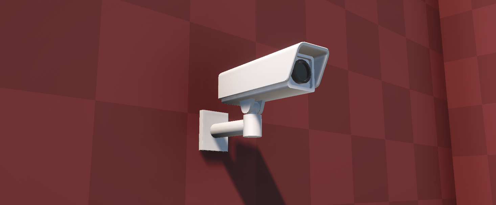
Setup
-
Go to the
Implementation > Prefabs > Security Camerasfolder and drag in your preferred prefab. -
Modify the properties in the Inspector to your liking. Let's have a look at a few of them now:
Display Name- The name of the camera when viewed on a computer.Activate on Start- Begin rendering the camera when initialized (not recommended for performance reasons).Frame Rate- The rate at which an image will be rendered. Lower for better performance and realistic simulation of security cameras.Do Rotate Over Time- Pan the camera back and forth. You can define the from and to rotation, as well as the speed.Do Track Object- When the specified object is within the min and max track rotation, the camera will rotate to face them.
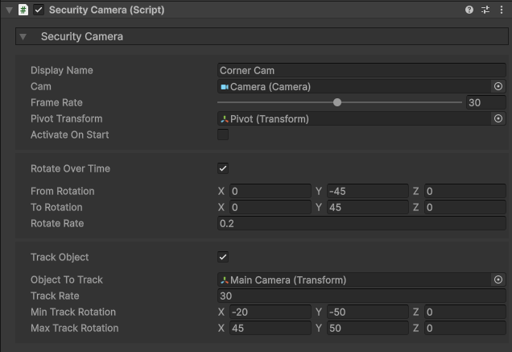
Technical
The camera's have been made as performant as possible, rendering an image only when being viewed on a computer, or when specified directly by you with the Activate() and Deactivate() functions. Performance is also saved in the quality of the camera. Since security cameras are designed for longevity and low memory, you can lower the frame rate and resolution to both save in memory and more closely simulate a real-world camera.
Viewing on a Computer
- To view your security cameras on a computer, first add a Computer to your scene.
- Then, navigate to the SecurityCameraScreen child object (this is a child of the canvas).
- In the ComputerScreenSecurityCameras component, add the cameras you wish to view on the computer to the
Cameraslist.
Post-Processing Effects
Security cameras are generally low-quality, grainy, off-colored, and we can simulate this in Unity using post-processing effects. By default, the security camera prefab features a Sphere Volume, which is a small, local volume for the camera.
The Volume Profile for this is stored in the Implementation > Data > Security Camera folder. Add/modify effects to get the look you want. Feel free to create new profiles for individual cameras as well.
Scripting
There are a couple of interesting things you can do with the security cameras, by calling these functions:
Activate ()- Enable the camera and output to the render texture.Deactivate ()- Disable the camera and stop outputting to the render texture.IsInView (Bounds bounds)- Returns true if the requested bounds are within view of the camera.IsInView (Collider collider)- Returns true if the requested collider is within view of the camera.ChangeTrackedObject (Transform target)- Assign a new object for the camera to track.
Levers
Levers are interactables which can switch between an on and off state. You can create 2 types of levers: rotational levers and positional levers. Both function in the exact same way, except that their state is visualized by a difference in rotation and position respectively.
Setup
To create a lever, you will need 3 components:
- Interactable - Used to detect when the player is looking at the lever.
- RotationToggle or PositionToggle - Set the lever's state and updates it visual.
- Collider - Any type of collider defining the interaction bounds.
Do note, the RotationToggle and PositionToggle components function in almost exactly the same way, so we'll only be looking at the RotationToggle here.
Animation
By default, the lever will be animated via scripting.
- Assign a
Rotate Object, which is what wll be doing the movement. - You can then define a local
On RotationandOff Rotationfor the object to rotate between. - The
Rotate Timeis how long it takes for the lever to animate. - The
Rotate Curveallows you to have smooth movement, a gradual increase in speed, or whatever you wish.
Instead of rotating the lever via script (which is the default setting), you can choose to connect it to an Animator component. To do this, simply enable Use Animator.
The Is On Bool Parameter Name is the boolean parameter the component will toggle on the referenced Animator component. Hook this up however you like to your animation.
Events
Now you probably want your lever to do something instead of just flicking back and forth. In the Events dropdown, you can connect the OnTurnOn and OnTurnOff events to whatever you want. If it's to a door, as in the example below, drag in the Door component and connect to it's Open and Close functions.
Buttons
Buttons are interactables which can trigger an event and animate via scripting or an Animator component.
Setup
To create a button, you will need 3 components.
- Interactable - Used to detect when the player is looking at the button.
- PressableButton - Trigger the event and animate the button.
- Collider - Any type of collider defining the interaction bounds.
Animation
By default, the button will be animated via scripting.
- Assign a
Button Object, which is what will be doing the moving. - You can then define a local
Default PositionandPressed Positionfor the object to move between. - The
Press Durationis how long the total press animation will take. - The
Press Curveallows you to have smooth movement, or a sudden click then gradual return.
Alternatively, you can choose to animate the button via an Animator component. This can be good if you have multiple objects you wish to animate.
- Enable
Use Animator. - Reference your Animator components.
- The
Press Trigger Parameter Nameis the name of the trigger that will be triggered in the Animator when the button is pressed. Implement this in your Animator as you see fit.
Events
The button has a single event: OnPress, which invoked when the button is pressed!
Locks & Unlocking
Locks & Lockpicking
Lockpicking
The toolkit features two lockpicking mini-games, which can be triggered upon interacting with a Door (or anything else if you wish), and when completed will unlock it. These mini-games are re-creations of existing systems in other games, so hopefully their mechanics are familiar to you.
- Tension Lockpicking - Similar to the system in Skyrim.
- Pin Lockpicking - Similar to the system in The Elder Scrolls Online.
Setup
- Add one of the LockpickingController's to your scene, found in the
Core > Prefabs > Systems > Controllersfolder, and make it a child of the ExplorationToolkitManager.- Choose between the LockpickingController_Tension and LockpickingController_Pin.
- The lockpicking screen is built upon the Inspect System, so you also need to add an InspectController.
Tension Lockpicking
The goal here is to rotate the lockpick with the mouse in an attempt to find the sweet-spot. Press D to try and turn the lock. If the pick is in the sweet-spot, it will turn all the way and unlock. Otherwise, the lock may turn somewhat (the further it turns, the closer you are) then begin to wiggle. If you let the lock wiggle too much, the pick will break.
- Higher difficulties shrink the sweet-spot angle, the max tolerance angle, and the rate at which the lockpick is damaged.
- Similar to the lockpicking in Skyrim.
Here's a look at the TensionLockpicking component, which runs the whole show. For the most part, I recommend leaving most of the properties alone, unless you plan on replacing the models with your own custom ones.
Let's go over some of the less obvious properties and what they do.
- The
Lockpick Position Targetis an empty GameObject which is a child of the dial. Since the lockpick enters the keyhole off-center from the center of the dial, the pick needs to move when the dial rotates. - The
Dial Objectis the keyhole which rotates to the right. - The two
Rotate Axisproperties are in local space. - The
Durability Damage Rateis how much lockpick damage accumulates per second when the lock is wiggling. Once that number reaches 1, the lock breaks. So a damage rate of 0.5 will give you 2 seconds of total wiggle time before breakage.
Note
There is also an Inspectable component attached. This is because the lockpick window is controlled via the inspect system.
Pin Lockpicking
The goal here is to set all five pins. You do this by moving the mouse to select a pin, then holding down the Left Mouse Button, watch as the pin is pushed down. The moment it begins to wiggle, let go, and it will be set. If you let a pin wiggle too much, the pick will break.
- Higher difficulties shrink the time between the pin beginning to shake and breaking.
- Similar to the lockpicking in The Elder Scrolls Online.
Here's a look at the PinLockpicking component, which runs the whole show. For the most part, I recommend leaving most of the properties alone, unless you plan on replacing the models with your own custom ones.
Let's go over some of the less obvious properties and what they do.
- The lockpick moves via IK, so the
Lockpick Rotate Pivotis a Transform at the keyhole which only rotates. TheLockpick Position Pivotis a child of that (containing the lockpick model) and moves left and right locally. - The
Align Y Position Offsetdetermines how high the lockpick hovers above the pins when selecting one.
Note
There is also an Inspectable component attached. This is because the lockpick window is controlled via the inspect system.
Each of the 5 pins have a LockPin component. This controls the movement, spring deformation, wiggle, and state of the pin. These are then all referenced in the PinLockpicking's Pins list.
Lockpicking a Door
If you want to setup a door for lockpicking, do the following:
- In your Door component, enable
Start LockedandCan Open With Lockpicking. - Click on the Create New button next to
Lockpickable Component. - A Lockpickable component will be created. Configure it to your liking.
Keypads
Keypads are interactables which allow the player to input a numerical code via buttons. These can be useful for locked doors, safes, or any other kind of puzzle.
Setup
1. Prefab
If you go to the Implementation > Prefabs > Locks folder, you will see a number of different keypads which you can implement.
There are two main types: Keypad and Keypad (No Display).
They are both constructed in the same with, with the only difference being one doesn't have a UI display to show the code input and messages.
Each keypad also has a Camera Focusable variant. Here's how they differ:
- Keypad - The player looks at each button, interacting with them to register an input.
- Keypad (Camera Focusable) - The player interacts with the keypad to zoom the camera in, where they then use the mouse to click on the buttons. If you wish to use this type of keypad, make sure you have setup camera focusing.
2. Configuration
In the Inspector, let's have a look at the Keypad component.
Correct Codeis what the player must enter in order to unlock the keypad.Correct Display Textis the text that gets displayed when the keypad is unlocked (this is only used for the keypad with a display).Max Input Lengthis the max amount of numbers the player can enter in a single string.- If you want the keypad to unlock the moment the correct code has been entered, enable
Verify Code Instantly, otherwise they will need to click the ENTER button. - If
Clear Input Upon Enter Buttonis true and the player clicks ENTER, the current input will be cleared. Disable Input After Completionwill disable the keypad once the correct code has been entered.Base Text Coloris the color of the display text by default.- When the correct code has been entered, the text color will change to
Correct Text Color.
Unlocking a Door
Let's look at how we can connect a keypad to a door.
-
Create the Door iteself, making sure to enable
Start Locked. -
On the GameObject which rotates and which the player interacts with, disable
Enable Interaction, because at first, we don't want the door to open or close, or attempt to unlock via key, etc. -
Drag the Keypad (Camera Focusable) into the scene as a child of the door object. You can also use the non-camera focusable version if you wish.
- Assign a
Correct Code.
- Assign a
-
Down in the Keypad's
OnSubmitCorrectCodeevent, connect these functions:Interactable.ToggleEnableInteraction(true)- Allow the player to now interact with the door.Door.Unlock()- Unlocks the door.Door.Open(true)- Opens the door (you might not want the door to open automically upon unlock too).CameraFocusable.ExitFocus()- Stop focusing on the keypad (if using the camera focusable version).
Combination Locks
Combination locks are interactables which allow the player to turn dials in order to enter the correct code. These can be useful for locking containers, doors, or any kind of puzzle element.
Setup
1. Prefab
If you go to the Implementation > Prefabs > Locks folder, you will see the CombinationLock prefab. Drag that into your scene and put it wherever you wish. If it's purpose is to lock a container of sorts, I recommend making it a child of that object.
Note
By default these locks have the camera zoom in on them, so make sure you have correctly setup the Camera Focusing system first.
2. Configuration
In the Inspector, we can configure some properties.
- The
Unlock Combinationis an array of numbers, defining the required value of each dial to unlock. - If
Scramble Combination at Startis true, the dials will be randomly turned upon initialization (don't worry, it won't accidently set the unlock combination). If false, you can manually define a starting combination. - The
Dialslist contains all of the Transforms for the dial objects. You can adjust their rotation axis and zero angle (angle in degrees at which 0 is displayed) below. - The
Dial Interactables Parentis the GameObject which contains all of the individual Interactables, which the player can click on to turn. By default this is disabled, and only enabled when the camera focuses on the lock. Destroy On Unlockwill destroy the lock GameObject once unlocked, afterDestroy Delayseconds has elapsed.Animate On Unlockwill allow you to play an animation once unlocked (animating the lock opening or something).
Unlocking a Box
Let's look at how we can connect a combination lock to a box. This would be ideal for puzzle game.
- Drag the Gem Box prefab into your scene, located in the
Implementation > Prefabs > Containersfolder - Implement the Camera Focusing system.
-
Drag in the Combination Lock prefab, located in the
Implementation > Prefabs > Locksfolder. Make it a child of the box. -
In the Inspector, define an
Unlock Combination. -
For the combination lock's
OnUnlockevent, connect that to theUnlock()function on the gem box's Door component.
Unlockables
Doors, crates, and many other things can be locked and require the player to do something in order to open them. That may be a key, a special item, or a lockpicking mini-game.
An Unlockable component can consume a key of sorts to unlock. These are most commonly used with Doors, but can also be used for your own custom implementations.
There are two types of unlockables you can define:
-
Key Unlockable - A key object/item/stat will be consumed to unlock this thing.
-
Lockpickable - A lockpicking mini-game must be completed to unlock this thing. An object/item/stat can also be consumed if the lockpicking fails.
Key Unlockable
Used to unlock something with a key the player may be in possession of. This could be an old brass key, a keycard, a puzzle piece, etc.
- The
Key Typeis what the player needs to have in order to unlock this (Pickupable, Item Data, Stat). - There will then be a field to assign the respective key. For a Key Type of Stat, you can define an amount required to unlock, as well as an amount consumed upon unlock.
- If
Consume Keyis enabled, then upon unlocking, the key will be destroyed - Pickupable will be destroyed, item removed from inventory, stat reduced.
Lockpickable
Used to trigger Lockpicking.
- The
Difficultydetermines how hard this will be to lockpick (easy, medium, hard, expert). - If
Require Unlock Meansis true, then the player will need something in order to pick this lock. - The
Lockpick Consume Conditiondefines when the unlock means will be consumed. At the beginning of the attempt, or when the lockpick breaks? - The
Unlock Means Typeis what the player needs to have in order to pick this lock (Pickupable, Item Data, Stat). - There will then be a field to assign the respective means. For a Unlock Means Type of Stat, you can define an amount required, as well as an amount consumed.
- If
Cosume Meansis enabled, then upon unlocking, the means will be destroyed - Pickupable will be destroyed, item removed from inventory, stat reduced.
Implementation
The components on their own might seem abstract, which is the point as they can be utilized in a wide range of instances. The most common is with doors. You might want a door that locked, and which can only be opened with a key and/or lockpicking.
If you want to use these components with your own custom systems, here's how.
- Call the component's
AttemptUnlock()function to try and unlock it. This can be connected via an Interactable component. - If the player was successful in unlocking, the
OnUnlockSuccessevent will invoke, otherwiseOnUnlockFailwill invoke.
Inventory & Items
Inventory & Items
Items
In your game, you might want items for the player to pickup and add to their inventory. In the toolkit, items are represented by ScriptableObjects, and instanced with GameObjects. This method means item stacking, as of now, is not present in the toolkit. But for puzzle games where the player's progression can be tracked via what they are holding, this method works just fine.
Creating an Item
1. Item Data
You first need to create an ItemData ScriptableObject. This is what's used to define what kind of an item a GameObject is.
Right click in the Project window and select Create > Exploration Toolkit > Item Data.
- Give your item a
Display NameandDescription. - The
Iconis a sprite which is what's rendered in the inventory. - The
Item Prefabis optional, but recommended. This is what we're going to cover in the next section. You will need to include this, if the item is given to the player not via an interaction with the item in-game.
2. Item GameObject
What gets added to your inventory is not the ItemData, but a GameObject with the Item component attached.
Create a GameObject with a visual for the item as a child, then attach these 3 components:
- Interactable: Used to detect interactions by the player.
- Item: Defines this GameObject as an item, something that can be added to the inventory.
- Collider: Any type of collider to define the bounds of the interaction.
In the image below, I have an example of a key item.
On the Item component, there are a few properties to look at.
- All Items need the
Dataproperty assigned to their respective ItemData file. Can Add to Inventorydetermines if this item can be added to the player's inventory. Most of the time, you'll want this enabled.Add to Inventory Upon Interactwill add this item to the inventory when the player interacts with it, thus, no functions need to be connected to the Interactable'sOnInteractevent.Destroy When Removedwill delete the GameObject when removed from the player's inventory.Can Inspect in Inventorywill allow the item to be inspected from inside a Window Inventory. This requires an Inspectable component to be attached.
Equippable Items
Items such as torches, or compasses, or weapons can be equipped by the player from their inventory. For this to work, the item GameObject must have a Pickupable component attached (as well as the pickup system implemented).
Here's a look at the components which make up a flashlight item. Make sure that in the Pickupable component, disable Can Pickup in World (so the item gets added to the inventory and not held straight away), and enable Can Equip From Inventory.
Note
As of now, equipping items from the inventory can only be done when using the Hotbar Inventory.
Inspectable Items
You might want to inspect items in your inventory for further analysis. For this to work, the item GameObject must have an Inspectale component attached (as well as the inspect system implemented).
Here's a look at the components which make up an item you can inspect in the inventory. Make sure that on the Item component, Can Inspect in Inventory is enabled, and on the Inspectable component, Can Inspect in World is disabled (this will prevent any conflict between inspecting and adding to inventory upon initial interaction).
Note
As of now, inspecting items in the inventory can only be done when using the Window Inventory.
Inventory Controller
The InventoryController is what manages the player's items, adding them, equipping them, removing them, etc.
Setup
Add the InventoryController prefab to your scene, located in the Core > Prefabs > Systems > Controllers folder. Make this a child of the ExplorationToolkitManager, as this will automatically register it, allowing it to be accessed by either the hotbar or window inventory.
In the Inspector, define the inventory Size. This is how many items slots the inventory will have.
- The
Starting Itemsis a list of ItemData files, which will be added to the inventory upon initialization. Can Pickup Itemswill allow the player to interact with items in the world to add them to the inventory.Can Equip Stored Itemswill allow the player to equip an item in the hotbar inventory once selected.Can Inspect Stored Itemswill allow the player to inspect an item in the window inventory once clicked on.
From here, you can choose to implement either a Hotbar Inventory, or a Window Inventory.
Hotbar Inventory
A hotbar inventory displays items at the bottom of the screen. You can scroll with the mouse wheel to select a slot, and if that item is equippable, it will be equipped.
Setup
First, make sure you have setup an Inventory Controller.
To add a hotbar inventory, simply drag the InventoryHotbar prefab into your scene, which is located in the Core > Prefabs > Inventories folder.
Note
The GameObject does not need to be a child of the ExplorationToolkitManager, as this is not a registered system.
Window Inventory
A window inventory displays items in a toggleable window (by default, the Tab button). You can hover over these items to display their name and description on the right hand side, and if setup, even inspect them.
Setup
First, make sure you have setup an Inventory Controller.
To add a window inventory, simply drag the InventoryWindow prefab into your scene, which is located in the Core > Prefabs > Inventories folder.
Note
The GameObject does not need to be a child of the ExplorationToolkitManager, as this is not a registered system.
Navigation
Camera
Camera
Camera Focusing
You might want the camera to zoom in on a keypad, or focus in on something to allow further interaction.
Setup
1. Camera Focus Controller
In order to have the camera detatch and move towards where you want, the CameraFocusController is required to be in the scene. The prefab for that is located in the Core > Prefabs > Systems > Controllers folder. Drag that in the scene as a child of the ExplorationToolkitManager.
In the Inspector, you can adjust the properties to fit your game style.
- Disable
Use Main Cameraif you don't want the main camera to be the one focusing. This will then allow you to reference whatever camera you want. - The
When Focusedproperties determine what gets enabled/disabled during the focus state. - The
When Transitioningproperties determine what gets enabled/disabled during the movement to and from the focus point.
2. Focusable
With the controller setup, you can now define some focusables. These are the actual things the camera will be focusing on.
To begin, create an empty GameObject (ideally as a child of the thing you're planning to focus on), and position it where you want the camera to move to. The Z (blue) direction will be the camera's forward facing direction.
Next, on the object you want to focus on, add the CameraFocusable component.
- Assign the empty GameObject you just created as the
Focus Pivot. - The
Time to Focusis how many seconds it takes for the camera to transition. - The
Focus FOVdetermines what field of view the camera will change to upon focusing. A value of 0 means the FOV won't change. - With the events, you might want to enable some interactions upon focusing and disable them upon exiting the focus.
Now in order to trigger the focus, you need to call the CameraFocusable's Focus() function. Most of the time, this will be triggered upon interacting with something. So on the object you wish to focus the camera on, attach an Interactable component, and connect its OnInteract event with the focusable's Focus() function.
Camera Zoom
The CameraZoom component, once attached to the camera, can zoom in the FOV when holding middle mouse.
If you are using game settings, this component will automatically set and update the camera's field of view.
UI
UI
UI Manager
The UI Manager acts as the central point for controlling which window is currently open (inspect screen, inventory window, etc), and toggling the HUD. It also manages sound effects for buttons.
By default, the UIManager is included in the ExplorationToolkitManager, so there's no need to manually add it.
On the component itself, you can assign some button sound effects. These are triggered when hovering and clicking on an ETButton, the toolkit's custom button implementation.
Game Window
If you have a window in-game you wish to open (e.g. inspect screen, inventory window), the process of doing so is controlled by the UIManager. A window is represented by a GameWindow component.
On the InventoryWindow prefab, you will see the GameWindow component attached. This is what's sent over to the UIManager when it wants to open. Upon opening, the UIManager reads its properties and makes adjustments if needed.
Can Override Open Windowwill cause any currently open window to close. If false and other window is open, this one will not open.Enable Cursorwill enable the mouse cursor when the window opens.Disable Player Inputwill disable all movement and interaction inputs, preventing the player from moving, looking, etc.Disable HUDwill disable all HUD elements (hotbar inventory, compass bar) when the window opens. This is good for full-screen windows like the inspect screen.
ETButton
ETButton is a component which replaces Unity's existing Button. It has events for OnClick, OnHoverEnter, and OnHoverExit. When hovered and clicked, it will play sound effects from the UIManager, via the Global Audio Source.
The button also has a scale adjustment when hovering and clicking to improve visual feedback. All the button elements in the toolkit use this custom implementation. There will also be improvements to it in the future, adding more features and quality of life things.
Resources
Advanced
Scripting
Warning
This section of the documentation is not required reading. It covers advanced topics that you may be interested in if you are looking to modify/expand upon the toolkit's codebase.
When using toolkits and assets in the past, I always wanted a section that went over the more technical aspects. So that's what this part of the documentation is!
If you wish to modify the scripts, or expand upon the systems, then understanding how it all works under the hood (and making sure your modifications don't break it all) is required.
Again, as the warning above states, this is not required reading. If you simply want to use the toolkit for your game, refer to the Setup pages and all those listed under Systems.
ETSystemRegistry
The toolkit implements the service locator pattern in its framework, using concrete MonoBehaviours instead of service interfaces.
This is done to prevent the over-reliance on singletons, which as a toolkit with many manager/controller components, it can be an issue. ETSystemRegistry acts as the single point of access when trying to reference a manager or controller.
The ETSystemRegistry component is attached to the ExplorationToolkitManager GameObject, which must be present in all scenes you wish to implement the toolkit's systems.
If you've dug through the code, you've likely seen lines such as this:
ETSystemRegistry.Instance.Get<UIManager>();
This returns a reference to the UI Manager that's currently in the scene.
What is a system?
The term system in the ETSystemRegistry encapsulates management components such as the UIManager and InputManager, as well as player-centric controllers such as the InspectController and PickupController.
For all the management and controller systems you wish to implement, make their GameObjects a child of the ExplorationToolkitManager, as this is how they will be identified and automatically registered upon initialization.
Where are these systems?
- Management Systems -
Core > Prefabs > Systems > Managementfolder. - Controller Systems -
Core > Prefabs > Systems > Controllersfolder.
Working with the ETSystemRegistry
If you are looking to add your own code to the toolkit or implement your own custom management scripts, I recommend integrating it within the current system. This will make your systems accessable without the need for its own direct dependancy or singleton.
Creating a new system
In this example, let's say we've created a ScoreManager component.
-
Have the class implement the
IRegisterableSysteminterface. The ETSystemRegistry will automatically find and register this system, if the component's GameObject is a child of it.public class ScoreManager : MonoBehaviour, IRegisterableSystem { }
Manually registering a system
Creating a system via the way mentioned above works for systems that are initialized at runtime. Generally, this is the recommended method, but if you wish to spawn a system later on in the game, you can register/unregister a system like so. Do note, these classes don't require the IRegisterableSystem interface.
-
In the
OnEnablefunction, register the system with ETSystemRegistry.void OnEnable () { ETSystemRegistry.Instance.Register(this); } -
In the
OnDisablefunction, unregister the system. This helps to prevent any errors later on if the component gets destroyed.void OnDisable () { ETSystemRegistry.Instance.Unregister(this); } -
Now the ScoreManager can be accessed from anywhere with the following:
ETSystemRegistry.Instance.Get<ScoreManager>();
Why isn't this the default way?
Registering a system manually can give you more precision over what and when a system is setup, but many components require subscribing to system events upon initialization. This can cause order of execution issues, so having every system registered via the IRegisterableSystem interface at runtime by the ETSystemRegistry, solves this problem.
Referencing a system
Convention in the toolkit is to not reference the system registry directly when needed, but rather create a read-only property in the script where it will be needed.
private InputManager inputManager => ETSystemRegistry.Instance.Get<InputManager>();
private UIManager uiManager => ETSystemRegistry.Instance.Get<UIManager>();
This allows you to write cleaner looking code, going from something like this:
ETSystemRegistry.Instance.Get<UIManager>().CloseCurrentWindow();
To this:
uiManager.CloseCurrentWindow();
ETGameSettings
This is a persistent (DontDestroyOnLoad) object which sets, loads and manages the game settings. This includes: volume levels, fov, key bindings, etc.
At the start of the game (ideally the menu scene), the component will load each setting in from the PlayerPrefs. These settings can then be accessed by components (e.g. the camera will read the FOV setting and assign it upon initialization, as well as whenever that value changes).
For a full list of settings, check out the ETGameSettings script.
Scripting
Accessing a setting value can be done like so:
ETGameSettings.Instance.MusicVolume.Value;
To change a setting (in a settings screen for example), call the setting's ChangeValue(T) function.
ETGameSettings.Instance.MasterVolume.ChangeValue(0.5f);
Each setting is represented by a generic Setting class. There are 4 supported data types for these settings: int, float, bool, string. Each setting also has a default value and PlayerPrefs key, which is assigned upon its initialization, as well as an OnUpdatedValue(T) event, which you can connect to in order to apply changes made.
For example, if you wanted the camera's field of view to update whenever the setting is changed, you could implement the following:
void OnEnable ()
{
inputManager.OnRightMouseButton += OnRightMouseButtonInput;
ETGameSettings.Instance.FieldOfView.OnUpdatedValue += OnFieldOfViewSettingChanged;
}
void OnDisable ()
{
inputManager.OnRightMouseButton -= OnRightMouseButtonInput;
ETGameSettings.Instance.FieldOfView.OnUpdatedValue -= OnFieldOfViewSettingChanged;
}
void OnFieldOfViewSettingChanged (float newFOV)
{
cam.fieldOfView = newFOV;
}
To get a full understanding on how the settings work, I recommend checking out the settings screen scripts.
Global Audio Source
On many components, down in their sounds section, you'll notice a Use Global Audio Source property. When enabled, the sounds won't play via a referenced AudioSource component, but through the GlobalAudioSource, which is included by default with the ExplorationToolkitManager prefab.
Why?
The purpose of the global audio source is to cut down on the number of AudioSource components created for all of the toolkit's systems. Instead of having an AudioSource for every object the player can inspect, there are none. The audio clip that is to play when inspecting begins is instead sent to the GlobalAudioSource, where the sound will be played via a PlayOneShot wrapper method, playing the sound in 2D in the player's ears.
Pros
Sounds don't require an AudioSource reference, less component/GameObject clutter.
Cons
Sounds are 2D, meaning they are not directional or position based. This may change in the future though!
Cached Audio Sources
There is another feature of the global audio source, and that is the ability to play a cached sound. Typically, all sounds will be played via a single AudioSource, which is good if it's for a single shot sound effect.
But if you want to play a sound and have it loop or cancel it mid play, that must be done on a separate, sole audio source.
When the PlayCached(AudioClip clip, bool loop) function is called:
- Check to see if an AudioSource has already been created and it's available.
- If not, create a new one.
- Set the clip and other properties, then play the sound.
If you want to stop the clip for any reason, you can call StopCached(AudioClip clip), sending over the clip you wish to stop. The associated audio source will be found, then the sound will be stopped.
Where is this used?
Cached audio sources are not used commonly in the toolkit. One place you'll find it being used though, is in the TensionLockpicking script. The sound that plays when the lockpick is strained loops and cuts off once the pick breaks or the player cancels the unlock.
Custom Inspectors
Many of the toolkit's components have associated custom editor scripts. These control how the properties are rendered in the Inspector, as well as decoration, such as foldouts, colours, warning messages, and buttons.
| Without Custom Inspector | With Custom Inspector |
Modifying script variables
If you're modifying existing scripts, be careful, as by default adding new variables won't render them in the Inspector, and changing the names of existing variables may cause the Inspector to log errors.
Why?
The custom inspector scripts serialize properties not with their name, but with a string. When you change the name of a variable in the Door script for example, you will also need to change the property that's being serialized in the DoorInspector script.
Creating a custom inspector
If you are creating your own components and wish to implement a component interface similar to the one in the toolkit, follow these steps:
-
Create a new script for the custom inspector in the
Core > Editor > Custom Inspectorsfolder. Call it something like MyComponentInspector. -
Setup your script as seen below. The
ExplorationToolkitBaseInspectorclass has a number of functions we'll be calling to format our component.using UnityEngine; using UnityEditor; namespace ExplorationToolkit.Editors { [CustomEditor(typeof(MyComponent))] [CanEditMultipleObjects] public class MyComponentInspector : ExplorationToolkitBaseInspector { } } -
Create the
OnEnablefunction, and register all the properties you wish to draw using theAddPropertyfunction.void OnEnable () { AddProperty("itemName"); AddProperty("pivot"); } -
Override the parent class'
headerThemevariable. This determines what color the foldouts are. If you wish to follow the colour-coded conventions, open the parent class and there will be comments next to the enumerator definition.protected override ThemeColor headerTheme => ThemeColor.Blue; -
For all the different foldouts you wish to implement, create private static variables for their state.
private static bool mainFoldout = true; private static bool advancedFoldout = true; -
Finally, override the parent's
RenderGUIfunction. This is where we will draw the properties, foldouts, etc.protected override void RenderGUI () { } -
To create a foldout, call the
DrawFoldoutfunction and set that to be the value of the respective static variable. This will toggle true or false when clicked on. Then if that foldout is true, draw its properties.mainFoldout = DrawFoldout(mainFoldout, "My Component"); if(mainFoldout) { } -
To draw a property, call the
DrawPropertyfunction, with the property name as the parameter. Optionally, you can send a second string parameter to override the name displayed.if(mainFoldout) { DrawProperty("itemName"); DrawProperty("pivot", "Pivot Point"); } -
If you wish to have boxes separating properties within foldouts, add the
BeginBoxandEndBoxfunctions.if(mainFoldout) { BeginBox(); DrawProperty("itemName"); DrawProperty("pivot", "Pivot Point"); EndBox();W }
Useful Functions
The ExplorationToolkitBaseInspector parent class has a few handy functions to help you in setting up and decorating your custom inspector.
void AddProperty(string propertyName)
- Add a new serialized property to the properties dictionary.
void DrawProperty(string property, string labelOverride = "")
- Wrapper for
EditorGUILayout.PropertyField(), with optional label override.
void BeginBox()
- Used to house similar properties. Make sure to cap it off with EndBox().
void EndBox()
- Called after the properties you wish to encapsulate in a box.
bool DrawFoldout(bool isOpen, string title)
- Draws a drop down section with custom label and colour. When clicked on it will open/close, displaying the contents inside.
void DrawETAudioClip (string property, string displayName)
- Draws our custom audio clip field with extra properties to adjust the playing of the sound.
Libraries
The toolkit features a number of different namespaces. If you are planning to expand upon/edit the scripts, it's important you understand them and what they contain.
- ExplorationToolkit - Classes for all core systems.
- ExplorationToolkit.UI - Classes for custom UI components (ETButton, ETCanvasGroup).
- ExplorationToolkit.Menu - Classes for the menu system.
- ExplorationToolkit.Demos - Classes for demo scene specific things (return to menu canvas).
- ExplorationToolkit.Implementation - Classes for custom implemetation (flashlight item).
- ExplorationToolkit.Editors - Classes for editor windows and custom inspectors.
Help
Help
If you're having trouble with the toolkit or encountering a problem which cannot be solved via the documentation and video tutorials, feel free to contact me at: explorationtoolkit@gmail.com
You can also join the Discord for support help.
Note
If you're having trouble with a component, click on the (?) button on the top right of the header to navigate to its corresponding page here on the website.
Changelog
v1.2.1 - Patch
Released ???
- Pickupable objects can now be thrown.
v1.2 - Major Update
Released February 23, 2026
- Added computers.
- Added security cameras.
- Added kinematic player controller.
v1.1 - Major Update
Released January 26, 2026
- Added lockpicking - both tension and pin variants.
- Added a menu system - with settings screen.
- Added a keycards.
- Major refactor to how systems are managed and accessed.
- Improved demo scene visuals and content.
- Improved compass bar visuals.
- Improved the implementation of player stats.
- Various other minor improvements to most of the toolkit's systems.
v1.0.1 - Patch
Released December 18, 2025
- Now using layer presets instead of overriding project settings.
v1.0 - Release
Released December 12, 2025
- Initial release.
FAQ
Importing
Why am I getting errors after importing.
This might be due to your project lacking certain Unity packages. Make sure your project has the following installed:
- com.unity.inputsystem
- com.unity.ugui
Why is my UI text invisible after importing?
The toolkit uses TextMeshPro, so make sure to install the essentials. A popup should appear to do so after importing the toolkit.
Editor
I changed a variable in a script. Now when I view that component in the Inspector, I get a NullReferenceException error.
Many of the toolkit's components have custom editors. If you ever want to change the name of a variable, or add/remove one, you will also need to update its corresponding inspector script, located in the Core > Editor > Custom Inspectors folder. Learn about how custom inspectors are used in the toolkit here.
Systems
How can I use my own player controller?
Refer to the documentation here on implementing a custom player controller.
The inspect screen is not appearing when I inspect an object.
Make sure you are adding the InspectCamera to your main camera's stack. This is an overlay camera, and it must be added to the camera stack to work.
General
Is multiplayer supported?
No, multiplayer is not supported. I'm focusing on additions and improvements to the toolkit with singleplayer as the core focus. I may introduce multiplayer support in the future, but it's not guaranteed.
Roadmap
The toolkit is an ongoing project, with new features in development at all times.
In the Works
Here are a list of features I'm currently working on, which will hopefully be coming in the next update, or one not too far away.
-
Map Screen - A full-screen map the player can explore, built on top of the minimap system.
-
Improved Minimap System - Minimaps will have more control over rendering and what information is displayed.
Future Features
Here are a list of features I'm planning on adding to the toolkit in the future. Some of these, I have begun work on, while others are only in concept at this time. This is not including overhauls of existing systems, as that will be a constant throughout development.
- Save system.
- Another complete game.
- Dialogue with captions.
- Custom shaders.
- Cutscenes.
- Scene management and transitions.
- Inspectable books with page turning.
- Stealth, vision and audio detection system.
- A larger collection of pre-built items, such as: telescopes, books, treasure, etc.